# Apply the function to the 'reviews' column in the 'Games' data frameGames_Tidy$Reviews <-sapply(Games_Tidy$Reviews, convert_revenue)Games_Tidy$`Est. Units Sold`<-sapply(Games_Tidy$`Est. Units Sold`, convert_revenue)Games_Tidy$Followers <-sapply(Games_Tidy$Followers, convert_revenue)Games_Tidy$`Est. Revenue`<-sapply(Games_Tidy$`Est. Revenue`, convert_revenue)# Remove the 'review_numeric' column if you no longer need itGames_Tidy$review_numeric <-NULLGames_Tidy$follower_numeric <-NULLGames_Tidy$units_sold <-NULLGames_Tidy$revenue <-NULL# Apply the function to create a list of genresGames_Tidy$Genres <-lapply(Games_Tidy$Genres, split_genres_games)Games_Tidy$Developers <-lapply(Games_Tidy$Developers, split_genres_games)Games_Tidy$Publishers <-lapply(Games_Tidy$Publishers, split_genres_games)Games_Tidy$`Publisher Class`<-lapply(Games_Tidy$`Publisher Class`, split_genres_games)# Rearrange the date values in the datasetGames_Tidy$`First Released`<-as.Date(Games_Tidy$`First Released`, format ="%b %d, %Y")# Converts all FREE values in price to 0.00Games_Tidy$Price[Games_Tidy$Price =="Free"] <-"$0.00"# Removes dollar sign and converts them to doublesGames_Tidy$Price <-as.numeric(gsub("\\$", "", Games_Tidy$Price))# Now, the 'Reviews' column contains the converted valuesprint(Games_Tidy)
Dev_Tidy$`Total revenue`<-sapply(Dev_Tidy$`Total revenue`, convert_revenue)Dev_Tidy$`Avg revenue per game`<-sapply(Dev_Tidy$`Avg revenue per game`, convert_revenue)print(Dev_Tidy)
# A tibble: 260 × 19
`#` Name Classification `Released games` `Unreleased games`
<dbl> <chr> <chr> <dbl> <dbl>
1 1 Valve AAA 37 1
2 2 Feral Interactive (… AA 46 0
3 3 Feral Interactive (… AA 30 0
4 4 CD PROJEKT RED AA 9 0
5 5 KRAFTON, Inc. AA 3 0
6 6 Aspyr (Mac) AA 12 0
7 7 Treyarch AAA 11 0
8 8 Capcom Co. Ltd AAA 53 2
9 9 Bethesda Game Studi… AAA 12 0
10 10 Ubisoft Montreal AAA 38 0
# ℹ 250 more rows
# ℹ 14 more variables: `Total revenue` <dbl>, `Avg revenue per game` <dbl>,
# `HQ country` <chr>, `% developed in-house` <dbl>, `% indie releases` <dbl>,
# Action <dbl>, Casual <dbl>, Adventure <dbl>, Simulation <dbl>,
# Strategy <dbl>, RPG <dbl>, MMO <dbl>, Racing <dbl>, Sports <dbl>
Tiding the Steam dataset
# Apply the function to create a list of genressteam$genres <-sapply(steam$genres,split_genres_steam)steam$steamspy_tags <-sapply(steam$steamspy_tags,split_genres_steam)steam$categories <-sapply(steam$categories, split_genres_steam)steam$platforms <-sapply(steam$platforms, split_genres_steam)steam$developer <-sapply(steam$developer, split_genres_steam)steam$publisher <-sapply(steam$publisher, split_genres_steam)# Access the third element (Multiplayer) in the split datadesired_element <- steam$genresprint(steam)
#print(steam[indie_rows,])#print(steam$genres[20][[1]])#indierows <- DS_GetAllOf(steam, "release_date", "2001-06-01")#indierows# Get revenue for all genresActionRev <-DS_GetAllOf(Games_Tidy, "Genres", "Action")action_revenue <-mean(ActionRev$`Est. Revenue`)FreeToPlayRev <-DS_GetAllOf(Games_Tidy, "Genres", "Free to Play")free_to_play_revenue <-mean(FreeToPlayRev$`Est. Revenue`)MMORev <-DS_GetAllOf(Games_Tidy, "Genres", "MMO")mmo_revenue <-mean(MMORev$`Est. Revenue`)AdventureRev <-DS_GetAllOf(Games_Tidy, "Genres", "Adventure")adventure_revenue <-mean(AdventureRev$`Est. Revenue`)StrategyRev <-DS_GetAllOf(Games_Tidy, "Genres", "Strategy")strategy_revenue <-mean(StrategyRev$`Est. Revenue`)IndieRev <-DS_GetAllOf(Games_Tidy, "Genres", "Indie")indie_revenue <-mean(IndieRev$`Est. Revenue`)RPGRev <-DS_GetAllOf(Games_Tidy, "Genres", "RPG")rpg_revenue <-mean(RPGRev$`Est. Revenue`)CasualRev <-DS_GetAllOf(Games_Tidy, "Genres", "Casual")casual_revenue <-mean(CasualRev$`Est. Revenue`)SimulationRev <-DS_GetAllOf(Games_Tidy, "Genres", "Simulation")simulation_revenue <-mean(SimulationRev$`Est. Revenue`)EarlyRev <-DS_GetAllOf(Games_Tidy, "Genres", "Early Access")early_revenue <-mean(EarlyRev$`Est. Revenue`)RacingRev <-DS_GetAllOf(Games_Tidy, "Genres", "Racing")racing_revenue <-mean(RacingRev$`Est. Revenue`)SportsRev <-DS_GetAllOf(Games_Tidy, "Genres", "Sports")sports_revenue <-mean(SportsRev$`Est. Revenue`)ValveRev <-DS_GetAllOf(Games_Tidy, "Genres", "Valve")valve_revenue <-mean(ValveRev$`Est. Revenue`)# Create a data frame with genres and revenuesrevenue_data <-data.frame(Genre =c("Action", "Free to Play", "MMO", "Adventure","Strategy", "Indie", "RPG", "Casual", "Simulation", "Early Access", "Racing", "Sports", "Valve"),Revenue =c(action_revenue, free_to_play_revenue, mmo_revenue, adventure_revenue, strategy_revenue, indie_revenue, rpg_revenue, casual_revenue, simulation_revenue, early_revenue, racing_revenue, sports_revenue, valve_revenue))# Create a bar chart using ggplotggplot(revenue_data, aes(x =reorder(Genre, Revenue), y = Revenue, fill = Genre)) +geom_bar(stat ="identity", alpha =0.9) +geom_text(aes(label = Revenue), vjust =-0.5, size =2, color ="black") +labs(title ="Avg Estimated Revenue by Genre", x ="Genre", y ="Revenue") +scale_fill_manual(values =c("Action"="skyblue", "Free to Play"="red", "MMO"="green", "Adventure"="yellow", "Strategy"="purple", "Indie"="pink", "RPG"="black", "Casual"="brown", "Simulation"="coral", "Early Access"="gold", "Racing"="orange", "Sports"="seagreen", "Valve"="turquoise")) +theme(axis.text.x =element_text(angle =45, hjust =1)) +scale_y_continuous(labels = scales::comma)
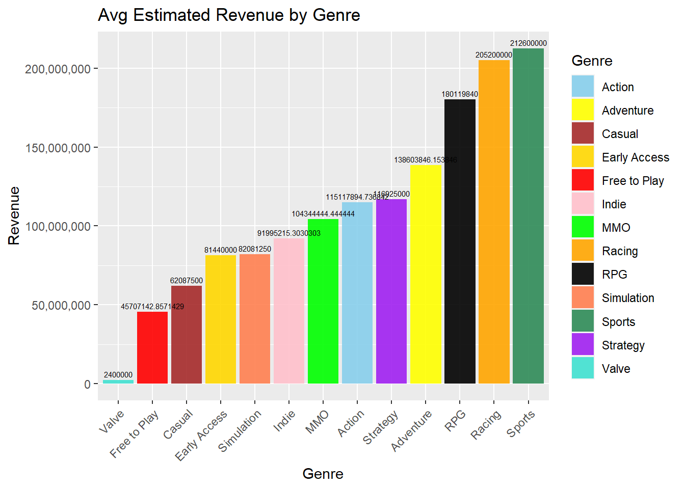
Bar Chart for Count of games in all Genres
#Get Count for all genresaction_count <-nrow(ActionRev)free_to_play_count <-nrow(FreeToPlayRev)mmo_count <-nrow(MMORev)adventure_count <-nrow(AdventureRev)strategy_count <-nrow(StrategyRev)indie_count <-nrow(IndieRev)rpg_count <-nrow(RPGRev)casual_count <-nrow(CasualRev)simulation_count <-nrow(SimulationRev)early_count <-nrow(EarlyRev)racing_count <-nrow(RacingRev)sports_count <-nrow(SportsRev)valve_count <-nrow(ValveRev)# Create a data frame with genres and revenuescount_data <-data.frame(Genre =c("Action", "Free to Play", "MMO", "Adventure","Strategy", "Indie", "RPG", "Casual", "Simulation", "Early Access", "Racing", "Sports", "Valve"),Gamecount =c(action_count, free_to_play_count, mmo_count, adventure_count, strategy_count, indie_count, rpg_count, casual_count, simulation_count, early_count, racing_count, sports_count, valve_count))# Create a bar chart using ggplotggplot(count_data, aes(x =reorder(Genre, Gamecount), y = Gamecount, fill = Genre)) +geom_bar(stat ="identity", alpha =0.9) +geom_text(aes(label = Gamecount), vjust =-0.5, size =3, color ="black") +labs(title ="Count of Games", x ="Genre", y ="Count") +scale_fill_manual(values =c("Action"="skyblue", "Free to Play"="red", "MMO"="green", "Adventure"="yellow", "Strategy"="purple", "Indie"="pink", "RPG"="black", "Casual"="brown", "Simulation"="coral", "Early Access"="gold", "Racing"="orange", "Sports"="seagreen", "Valve"="turquoise")) +theme(axis.text.x =element_text(angle =45, hjust =1))
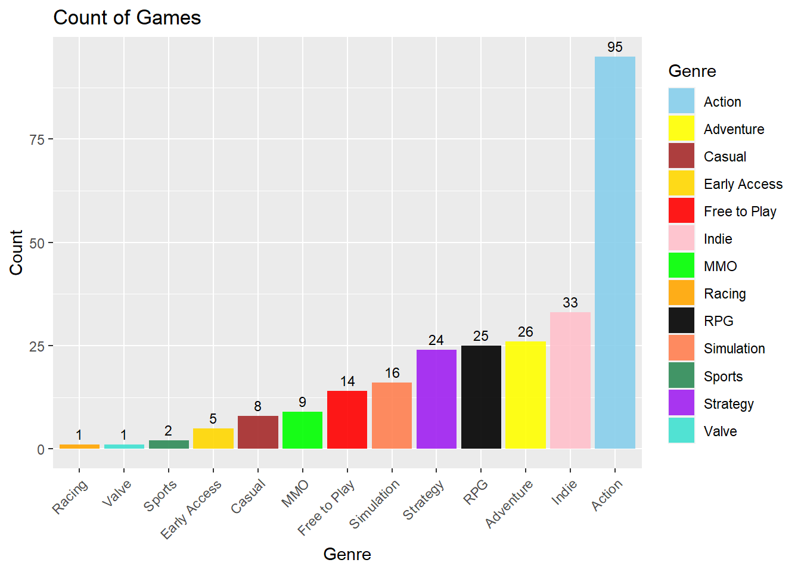
Games Released per year by Genre
##ACTIONActionRev <- ActionRev %>%mutate(year =format(`First Released`, "%Y"))ggplot(ActionRev, aes(x = year)) +geom_bar(stat ="count", fill ="skyblue", color ="black") +geom_text(stat ="count", aes(label = ..count..), vjust =-0.5, size =3) +labs(x ="Years", y ="Count", title ="Count of Action games by year") +theme(axis.text.x =element_text(angle =45, hjust =1))
Warning: The dot-dot notation (`..count..`) was deprecated in ggplot2 3.4.0.
ℹ Please use `after_stat(count)` instead.
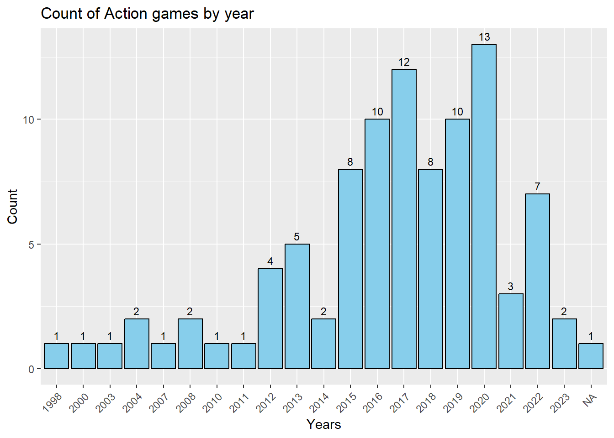
##INDIEIndieRev <- IndieRev %>%mutate(year =format(`First Released`, "%Y"))ggplot(IndieRev, aes(x = year)) +geom_bar(stat ="count", fill ="pink", color ="black") +geom_text(stat ="count", aes(label = ..count..), vjust =-0.5, size =3) +labs(x ="Years", y ="Count", title ="Count of Indie games by year") +theme(axis.text.x =element_text(angle =45, hjust =1))
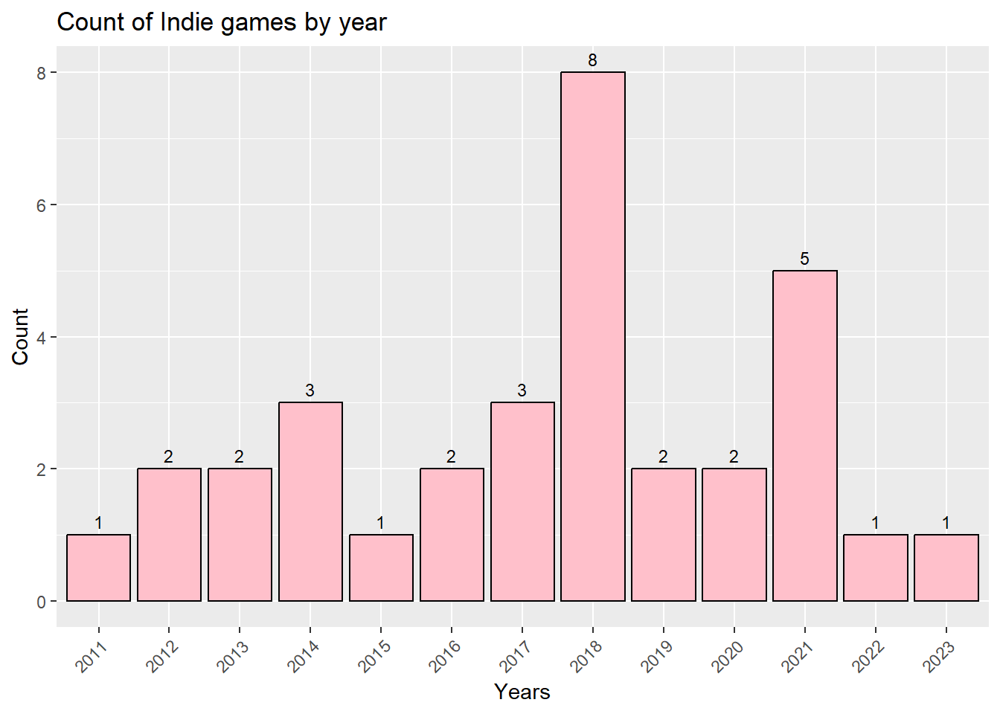
##AdventureAdventureRev <- AdventureRev %>%mutate(year =format(`First Released`, "%Y"))ggplot(AdventureRev, aes(x = year)) +geom_bar(stat ="count", fill ="yellow", color ="black") +geom_text(stat ="count", aes(label = ..count..), vjust =-0.5, size =3) +labs(x ="Years", y ="Count", title ="Count of Adventure games by year") +theme(axis.text.x =element_text(angle =45, hjust =1))
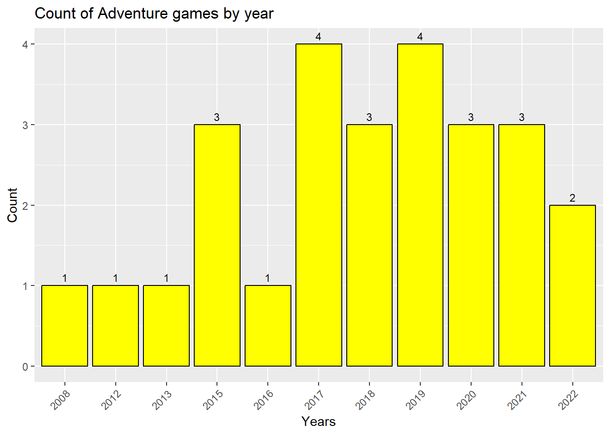
##RPGRPGRev <- RPGRev %>%mutate(year =format(`First Released`, "%Y"))ggplot(RPGRev, aes(x = year)) +geom_bar(stat ="count", fill ="black", color ="black") +geom_text(stat ="count", aes(label = ..count..), vjust =-0.5, size =3) +labs(x ="Years", y ="Count", title ="Count of RPG games by year") +theme(axis.text.x =element_text(angle =45, hjust =1))
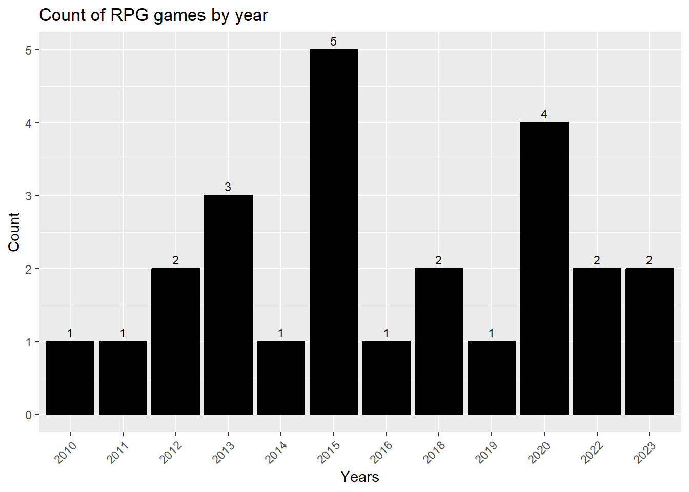
##StrategyStrategyRev <- StrategyRev %>%mutate(year =format(`First Released`, "%Y"))ggplot(StrategyRev, aes(x = year)) +geom_bar(stat ="count", fill ="purple", color ="black") +geom_text(stat ="count", aes(label = ..count..), vjust =-0.5, size =3) +labs(x ="Years", y ="Count", title ="Count of Strategy games by year") +theme(axis.text.x =element_text(angle =45, hjust =1))
##SimulationSimulationRev <- SimulationRev %>%mutate(year =format(`First Released`, "%Y"))ggplot(SimulationRev, aes(x = year)) +geom_bar(stat ="count", fill ="coral", color ="black") +geom_text(stat ="count", aes(label = ..count..), vjust =-0.5, size =3) +labs(x ="Years", y ="Count", title ="Count of Simulation games by year") +theme(axis.text.x =element_text(angle =45, hjust =1))
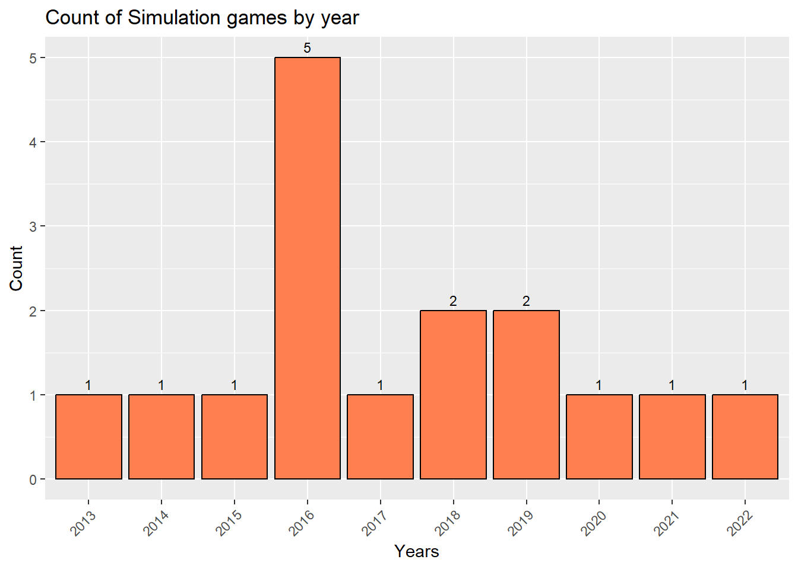
##Free to PlayFreeToPlayRev <- FreeToPlayRev %>%mutate(year =format(`First Released`, "%Y"))ggplot(FreeToPlayRev, aes(x = year)) +geom_bar(stat ="count", fill ="green", color ="black") +geom_text(stat ="count", aes(label = ..count..), vjust =-0.5, size =3) +labs(x ="Years", y ="Count", title ="Count of Free to Play games by year") +theme(axis.text.x =element_text(angle =45, hjust =1))
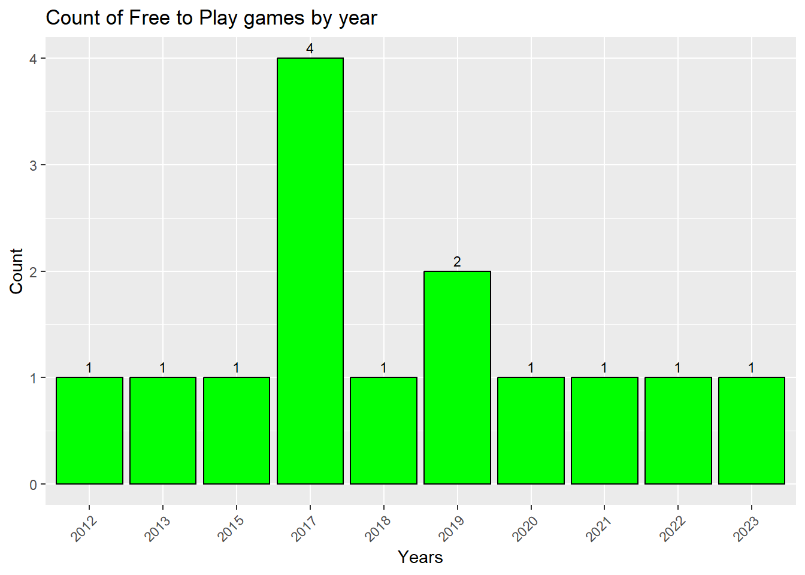
##MMOMMORev <- MMORev %>%mutate(year =format(`First Released`, "%Y"))ggplot(MMORev, aes(x = year)) +geom_bar(stat ="count", fill ="brown", color ="black") +geom_text(stat ="count", aes(label = ..count..), vjust =-0.5, size =3) +labs(x ="Years", y ="Count", title ="Count of MMO games by year") +theme(axis.text.x =element_text(angle =45, hjust =1))
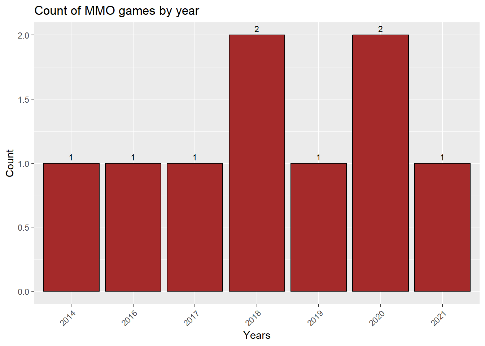
##CasualCasualRev <- CasualRev %>%mutate(year =format(`First Released`, "%Y"))ggplot(CasualRev, aes(x = year)) +geom_bar(stat ="count", fill ="gold", color ="black") +geom_text(stat ="count", aes(label = ..count..), vjust =-0.5, size =3) +labs(x ="Years", y ="Count", title ="Count of Casual games by year") +theme(axis.text.x =element_text(angle =45, hjust =1))
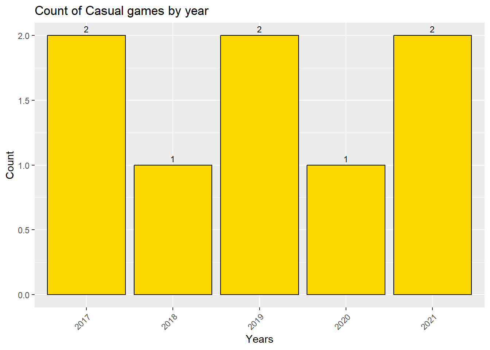
##Early AccessEarlyRev <- EarlyRev %>%mutate(year =format(`First Released`, "%Y"))ggplot(EarlyRev, aes(x = year)) +geom_bar(stat ="count", fill ="purple", color ="black") +geom_text(stat ="count", aes(label = ..count..), vjust =-0.5, size =3) +labs(x ="Years", y ="Count", title ="Count of Early Access games by year") +theme(axis.text.x =element_text(angle =45, hjust =1))
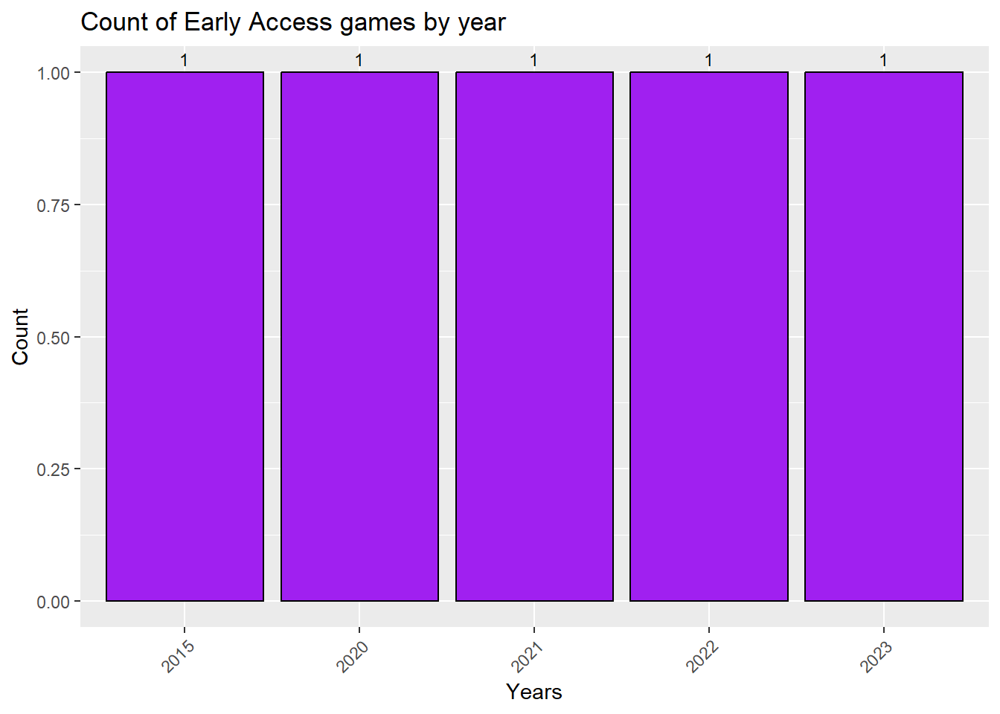
##SportsSportsRev <- SportsRev %>%mutate(year =format(`First Released`, "%Y"))ggplot(SportsRev, aes(x = year)) +geom_bar(stat ="count", fill ="seagreen", color ="black") +geom_text(stat ="count", aes(label = ..count..), vjust =-0.5, size =3) +labs(x ="Years", y ="Count", title ="Count of Sports games by year") +theme(axis.text.x =element_text(angle =45, hjust =1))
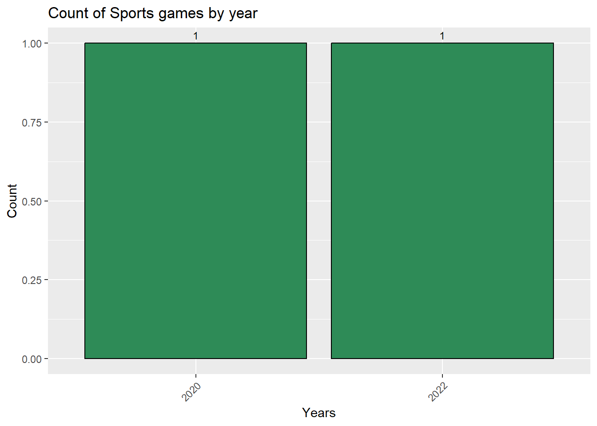
##ValveValveRev <- ValveRev %>%mutate(year =format(`First Released`, "%Y"))ggplot(ValveRev, aes(x = year)) +geom_bar(stat ="count", fill ="turquoise", color ="black") +geom_text(stat ="count", aes(label = ..count..), vjust =-0.5, size =3) +labs(x ="Years", y ="Count", title ="Count of Valve games by year") +theme(axis.text.x =element_text(angle =45, hjust =1))
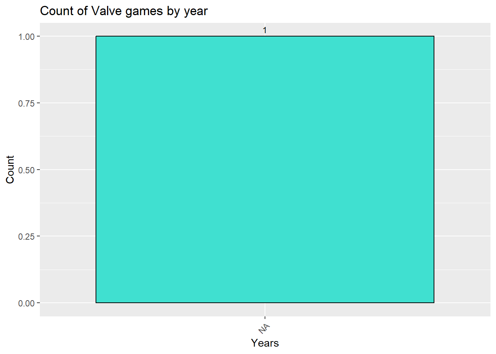
##RacingRacingRev <- RacingRev %>%mutate(year =format(`First Released`, "%Y"))ggplot(RacingRev, aes(x = year)) +geom_bar(stat ="count", fill ="orange", color ="black") +geom_text(stat ="count", aes(label = ..count..), vjust =-0.5, size =3) +labs(x ="Years", y ="Count", title ="Count of Racing games by year") +theme(axis.text.x =element_text(angle =45, hjust =1))